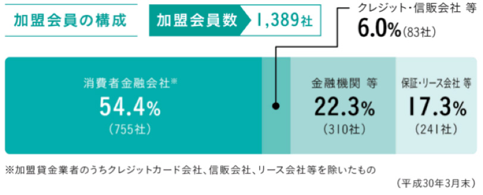
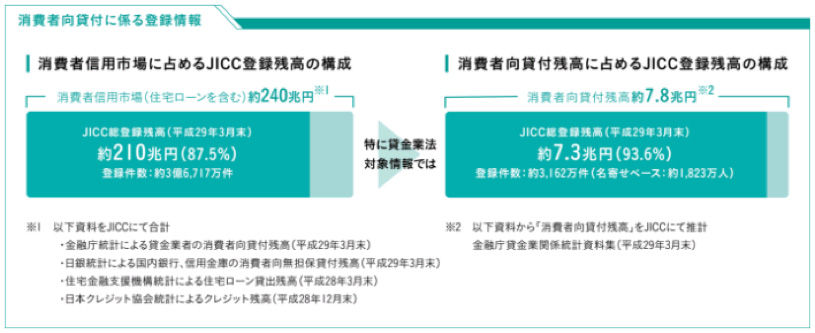
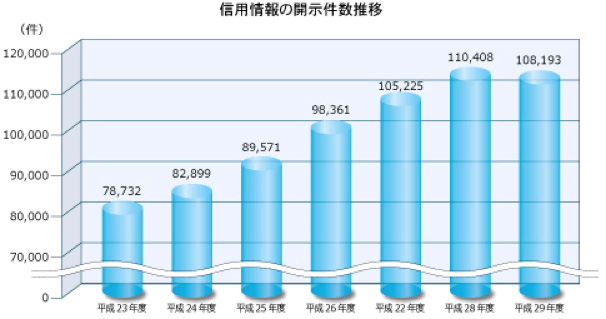

JICCについて
- ＨＯＭＥ
- JICCについて
「信用情報機関」としての責任。
私たちは、「信用情報機関の公共的使命を自覚し、信頼性の高い高品質なサービスの提供を通じて、
健全で豊かな社会の発展に貢献する」の経営理念のもと常に消費者の皆さまと会員会社さまの架け橋として消費者信用市場の発展に努めてまいりました。
今後、ＩＴの更なる進化に伴い、私たちの生活の一部であるクレジットやローンという形態は益々変化を遂げ
より身近で快適なものになっていきます。
そのような社会インフラの進化とともに信用情報の重要性はさらに高まることから
私たちは常に安心・安全を追求し正確な情報を速やかに提供することを責務としております。
私たちは、未来社会の発展に貢献し続ける企業を目指し一人ひとりが
安心できる「明日の当たり前」を創造してまいります。
データで見るＪＩＣＣ
加盟会員の状況
消費者金融会社、流通系・銀行系・メーカー系クレジット会社、信販会社、金融機関、保証会社、リース会社など与信事業を営む幅広い事業者が加盟しています。

登録する信用情報の状況
消費者信用市場に占めるＪＩＣＣ登録残高は国内最大規模です。

信用情報の開示の状況
ＪＩＣＣでは、窓口、郵送及びスマートフォンから開示申込手続きが行える「情報開示モバイル受付サービス」など、お客様がご自身のライフスタイルに応じて手続き方法を選択できるよう複数の手続き方法を設け、年間約１０万件の開示申込を受付けております。

ＣＳＲ活動
「信用情報」に関わるセミナーの開催
ＪＩＣＣでは、関係各位の協力を賜りながら、これから社会人になる大学生や高校生に向けて「信用情報リテラシー」をテーマとしたセミナーを行っております。２０１８年度は、計１０学校（大学８・高校２）の約１６００名の学生に対し、説明を行いました。
「啓発冊子「マンガでわかる信用情報！」の作成・配布
ＪＩＣＣでは、「マンガでわかる信用情報！（ＰＤＦリンク）」といった啓発冊子を作成・配布し、信用情報に関する正しい知識を持ってもらう活動を行っております。
![[アイコン]信用情報機関とは](../images/about/img01_cntarea02.png)
![[アイコン]加盟会員について](../images/about/img02_cntarea02.png)
![[アイコン]会社概要](../images/about/img03_cntarea02.png)